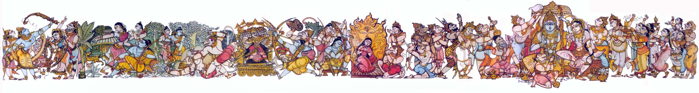

Ramayana Contents
Ramayana in art by Bapu
(for
a java based scrolling version of the painting, click here)

The image above depicts the following events in that order
- Breaking of Bow by Sri Rama to marry Seetha (Bala Kanda)
- The incident of the golden deer (Aranya Kanda)
- Rama killing Vali (Kishkindha Kanda)
- Rama's battle with Ravana (Yuddha Kanda)
- Seetha's fire ordeal (Yuddha Kanda)
- Coronation of Sri Rama